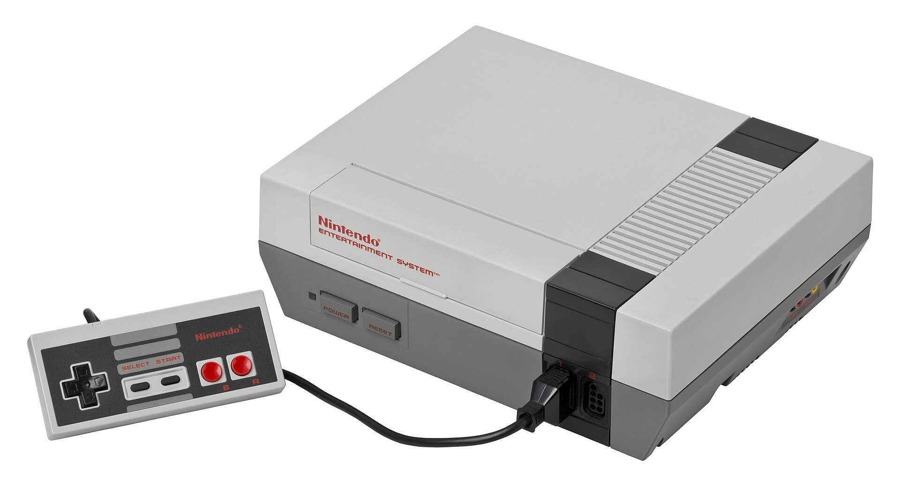
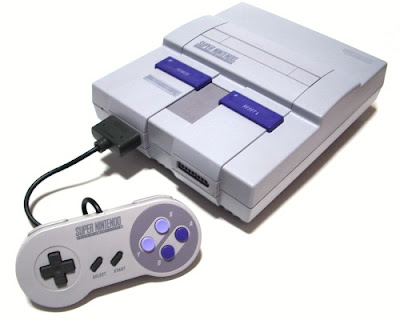

| Color Tv Game 6 |
 |
June 1st, 1977 |
The first ever Nintendo system! The number in the name indicates how many games are included in each console. (The number can vary between consoles.) |
| Game & Watch |
 |
April 28, 1980 |
The name "Game & Watch" comes from the fact that they have games on them (No duh), but also because each Game & Watch had a built in watch. Each system also had 2 game options, known as "Game A" and "Game B". Game B was usually just a faster, harder version of Game A, however, so don't get too excited! |
| Nintendo Entertainment System |
 |
July 15, 1983 (Japan)
October 18, 1985 (U.S) |
Nintendo's first big console! It started many famous franchises, and had a very simple controller, with just 2 buttons and a D-pad. |
| Game Boy |
 |
April 21, 1989 (Japan)
July 31, 1989 (America)
September 28, 1990 (Europe) |
The first big portable console! It's thanks to the Game Boy that portable gaming exists today and some viewed it's mucky colour scheme as charming. |
Super Nintendo Entertainment System |
 |
November 21, 1990 (Japan)
August 23, 1991 (America)
June 1992 (Europe) |
The successor to the NES, with even more power! Now having four buttons instead of only two (Improvements are improvements), the SNES is viewed by many as their favorite console. |
| Nintendo 64 |
|
June 23, 1996 (Japan)
September 29, 1996 (U.S)
March 1, 1997 (Europe) |
The first ever 3D console! This system hosts many cult classics, such as Super Mario 64, and The Legend Of Zelda: Ocarina Of Time/Majora's Mask. |
| Gamecube |
|
September 14, 2001 (Japan)
November 18, 2001 (America)
May 3, 2002 (Europe)
May 17, 2002 (Australia) |
The console known for having one of the best controllers known to video games, the Gamecube, despite not selling that much, is still enjoyed and played by thousands to this day. This was also the console where Nintendo made the jump from cartridges to disks. |
| Game Boy Advance |
 |
March 21, 2001 (Japan)
June 11, 2001 (America)
June 22, 2001 (Europe) |
The most popular of the Game Boy follow-ups, hosting a variety of games, some of which using the Game Boy Advance's tilt controls. In addition, you can play the entirety of the Game Boy's library on the Game Boy Advance thanks to backwards compatibility. |
| Nintendo DS |
 |
December 2, 2004 (Japan)
November 21, 2004 (America)
March 11, 2005 (Europe)
February 24, 2005 (Australia) |
The first portable console to stray away from the Game Boy line. DS stands for Dual Screens, and the bottom screen acts as a touch screen. The system also features a microphone, which allows you to blow in it to affect gameplay. |
| Wii |
|
December 2, 2006 (Japan)
November 19, 2006 (America)
December 8, 2006 (Europe)
December 7, 2006 (Australia) |
Appealing to a more casual audience, the Wii utilizes motion controls, which allows for some gamers to have a mini workout session while playing. |
| Nintendo 3DS |
|
February 26, 2011 (Japan)
March 27, 2011 (America)
March 25, 2011 (Europe)
March 31, 2011 (Australia) |
The follow up to the DS, this time wih a 3-D toggle! This allowed for even more immersion when playing games, as you're able to feel like the game is really popping out of the screen. |
| Wii U |
 |
December 8, 2012 (Japan)
November 18, 1012 (America)
November 30, 2012 (Europe) |
Nintendo's first console in HD! This console sported a GamePad, which allowed for a lot of fun scenarios involving both the TV screen and the GamePad screen. It also had full backwards compatibility with the Wii, letting you play all your favorite Wii games on the Wii U. |
| Nintendo Switch |
 |
March 3, 2017 (All regions) |
The Nintendo Switch combines the home and portable consoles together, to create a console that you can play both at home, connected to the TV, and on the toilet. It also features two Joy-Con controllers, which have a variety of different colour patterns. |